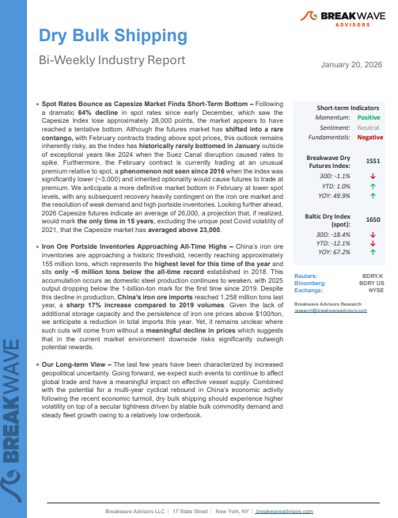
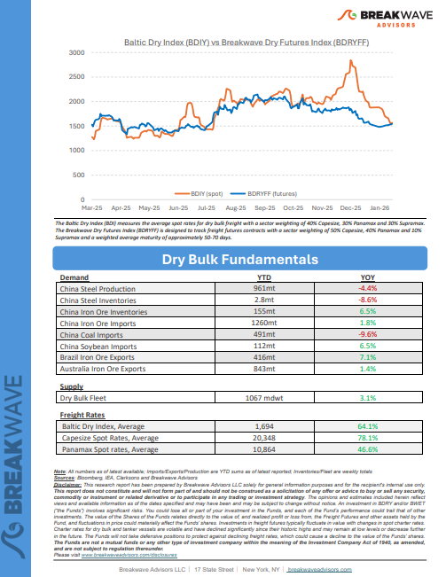
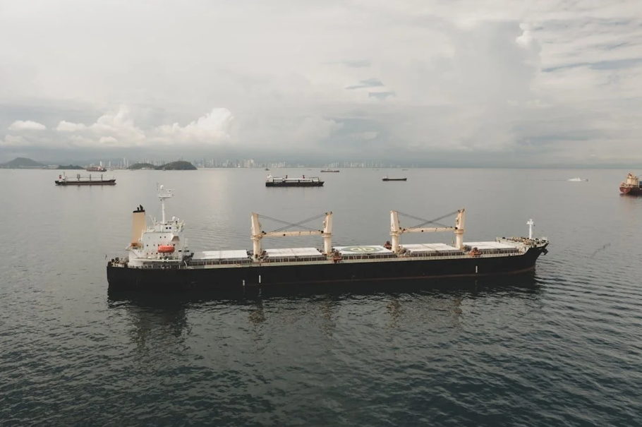
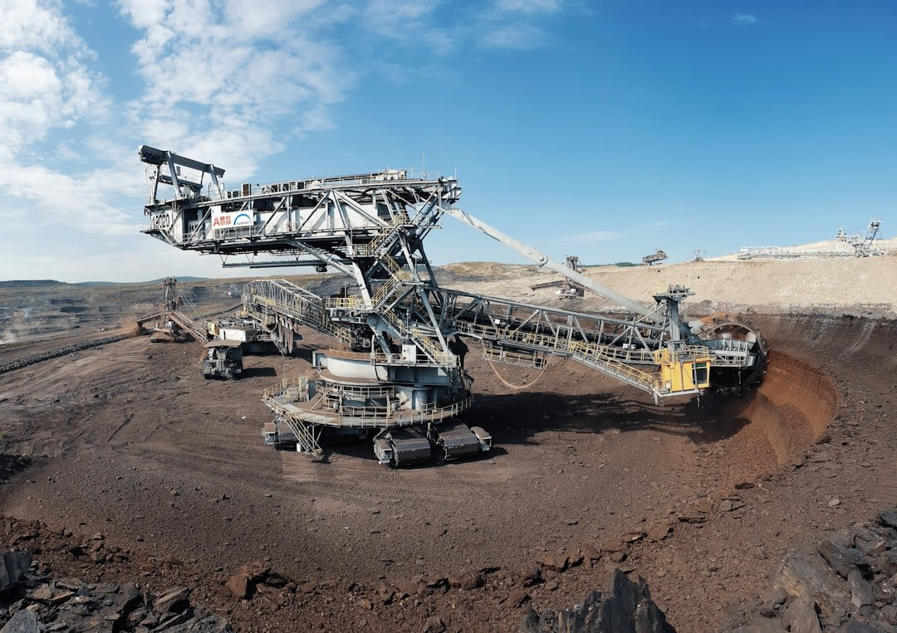
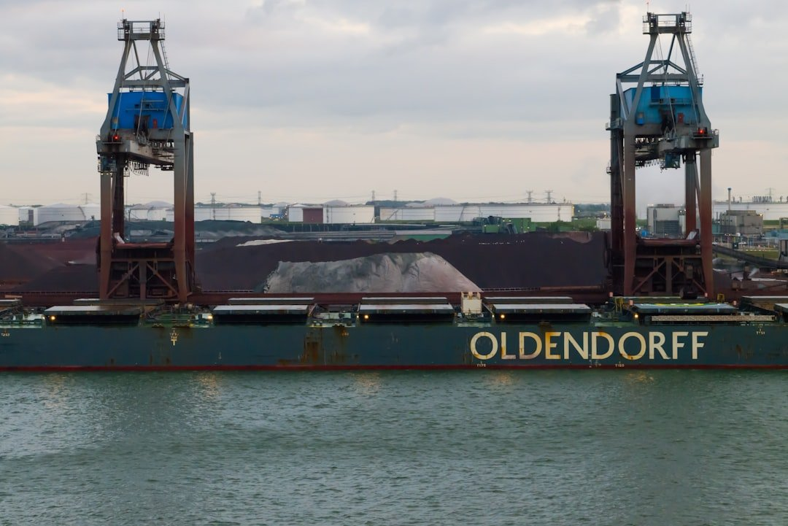

Welcome toBreakwave AdvisorsWeekend Read
As the week comes to a close, take a moment to review the key insights from the past few days. Missed something? We've gathered all the top insights for you to catch up at your convenience.
Highlight of The Week
John Kartsonas, Founder and Managing partner ofBreakwave Advisors,onCrude delights?:Tanker market fundamentals remainsupportive.
Click below and listen to the latestTradeWinds Wavelengthpodcast,Crude delights?,from1:03 to 5:40.
Breakwave Shipping Report
Spot Rates Bounce as Capesize Market Finds Short-Term Bottom– Following a dramatic64% declinein spot rates since early December, which saw the Capesize Index lose approximately 28,000 points, the market appears to have reached a tentative bottom.


Insights Of The Week
The global economic landscape

The global economic landscape has undergone a profound transformation over the past five years, shaped by a succession of disruptive forces that have altered market behaviour, redefined policy priorities, and recalibrated the trajectory of international trade.
Doric Weekly Market Insights
Trouble in Tehran

Following two weeks of unrest, the oil market is again focused on Iran after a period of relative calm since last summer’s 12‑day war.
Gibson Tanker Market Report
Market commentary
The first half of January reminded everyone that crude tankers do not need a fresh demand miracle to re-rate, they just need the map to change.
Xclusiv Shipbrokers Weekly S&P Report
Overview- Based on analysts canvased at the end of December, our forecast stands out as bullish relative to ‘the pack’.
Braemar Research
China has started 2026 with two signals that matter for bulk shipping
China has started 2026 with two signals that matter for bulk shipping in different ways.
Intermodal Weekly Market Report
Iron Ore Outlook: Simandou Supply, China Demand and Freight Trends

In this week’s Allied Quantumsea Research, we review the evolving iron ore market landscape as 2026 begins, focusing on the widening gap between price performance and underlying fundamentals.
Allied Weekly Report
How long can China continue to grow its iron ore stocks?

A 3% increase in global iron ore flows masks weak downstream demand..
Signal Ocean Commodity Radar
VLCC freight surge: is the momentum short lived or sustained
The VLCC market saw strong return in rates, but it's unlikely to be sustainable as the trade rebalances
Vortexa Freight Weekly
Capesize Ballasters
The Baltic Capesize Index opened the week marginally firmer, while weekly performance remains lower, indicating continued sensitivity in the freight market.
Signal Ocean Dry Weekly Market Monitor
What Venezuela means for today’s VLCC market
Venezuela firmly returned to the tanker market spotlight in 2025, as political developments and sanctions dynamics impacted crude flows and vessel demand.
Tankers International insight
Another Contraction in China's Coal-Derived Electricity Generation
As we discussed in Commodore Research's most recent Weekly China Report, China's coal output totaled 437 million tons last month.
From Commodore's Weekly Dry Bulk Reports